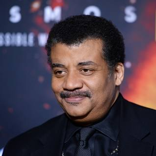

.png)
Theories
Throughout the years, many theories have been created that question space and its properties. Many of these theories focus on how the universe was created. Others focus on the laws of space regarding time, light, and gravity.
The Big Bang Theory
The Big Bang Theory is the most famous theory regarding the creation of the universe. This theory states that the universe as we know it started with an infinitely hot and dense single point that inflated and stretched — first at unimaginable speeds, and then at a more measurable rate — over the next 13.7 billion years to the still-expanding cosmos that we know today. While this may or not be true, it is still an interesting possibility to think about.
In 1927, an astronomer, Georges Lemaître, developed the Big Bang Theory, which claimed the universe originally began as a single point. He believed that that little point began to stretch and expand until it got to the size it is today. Without any evidence, however, he received much ridicule until, just two years later, another astronomer named Edwin Hubble discovered that galaxies were moving away from us. This proved that the universe was still expanding and showed that it has been expanding this whole time, exactly what Lemaître had said. Since the beginning of the universe was a tiny, hot dot, the tiny particles inside the vicinity began to group together, forming atoms. From there, those atoms came together to form stars and galaxies! The cycle continued and those stars and galaxies created more groups of atoms which created even more things. The deaths of these dangerously beautiful stars resulted in things like asteriods, comets, planets, and even blackholes.

Famous Astrophysicists
Albert Einstein, born in Germany March 14, 1879, died April 18, 1955, was a great contributor to theories about space. Many of his theories led to him being awarded a Nobel Prize. He proctored many questions about space through his curiosity.
